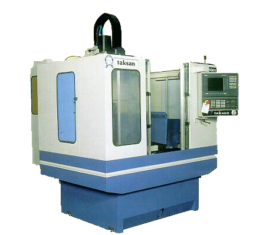
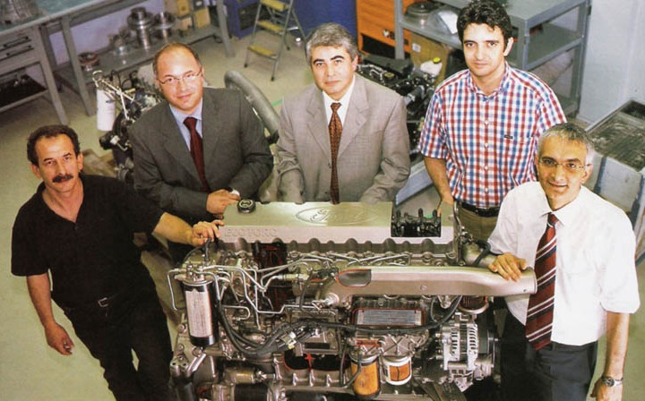
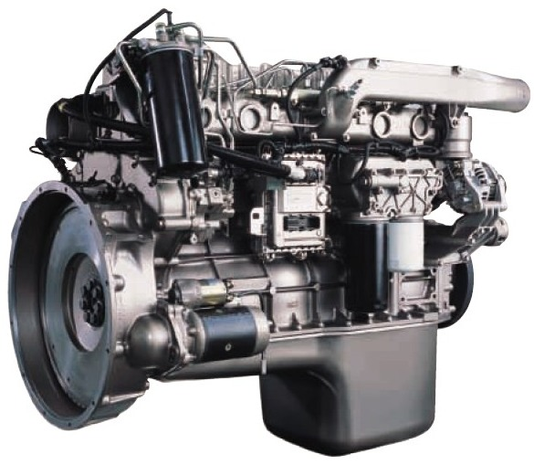
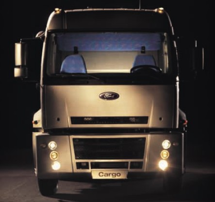

|
25.10.2005
Sayýn Üyeler,
Maalesef bizler öncelikli olarak Y. Lisans, sonra Ýngilizce, sonra meslek ve sonra da hangi üniversiteden mezun olunduðuna göre bir þeyler öðrenme ve/veya geliþtirme þansýný yakalayabiliyoruz? Bu da sanýrým bir þeylerin realitesi konusunda þüphe doðuruyor.
Türkiye'de 4 zamanlý Dizel Motor tasarýmý ile; %100 Türk mühendisleri tarafýndan, 2 yýl gibi kýsa bir sürede ve 10 kiþilik bir ekiple TÝDEB projesi olarak baþarýya ulaþtý ve ortaya Euro III, Intercooler, Turbo Þarjlý, SOHÇ, 16 V, 1400 d/d 'da 426 Nm, 2400 d/d'da 122 HP güç üreten 3 Silindirli bir motor ortaya çýktý! Bu projenin prototiplerini Motosan Motor Sanayi A.Þ. fabrikasýnda sanýrým görebilirsiniz. Firma yakýn zamanda seri üretime geçerek kendi reklamýný/bilgilendirmesini zaten yapacaktýr;
www.xalqqazeti.com/view.php?d=15593
www.motosan.com
www.bozkurtmodel.com
www.teknosistem.com.tr
Kaporta, lastik, jant, cam vb.. unsurlarda ise zaten kendi içimizde yeterliyiz. Analiz, CAD/CAM, CMM vb. konularda oldukça iyiyiz. Ancak enjektör ve pompa konusunda alternatif olan yerli bir firma bildiðim kadarýyla henüz yok?..
Mühendislik açýsýndan kendimizi çok aciz hissediyoruz sanýrým. ÞAE standartlarýnda yanma odasý dizayný hakkýnda makaleleri olan, bu konuda Dünyaca ünlü Türk Profesörlerimiz var. Ancak ne var ki bizim sanayicilerimiz "Yapýlamaz" düþüncesiyle, böyle iþlere girmekten korkmaktadýrlar ve yapýlmýþ örnekler ise onlara inandýrýcý gelmemektedir.
Bunun aþýlmasýný saðlayacak olan, devamlý göz önünde olan ve ellerinde yüksek reklam ve yatýrým gücü bulunan Türkiye'mizin otomotiv üreticileridir.
Bugün Ford Otosan, Hema Otomotiv, Mako, Uzel, Ditaþ, Parsan, Renault, Tofaþ vb. bir çok OTOMOBÝL üreten fabrikalarda yerli CNC tezgahlar var ise, bir motorun Türkiye'de tasarlanan ve üretilen makinelerle bütün parçalarý iþlenebiliyorsa, sac kalýpçýlýðý konusunda denizleri aþmýþ isek, kendi motorumuzu en iyi seviyede dizayn edip/üretebilmiþ ve piyasa lideri bir çok firmadan daha iyisini yapabilmiþ isek; Ýhtiyaç halinde; "Yerli Otomobil tasarýmý" konuþu; bunlarý birleþtirmek - adapte etmek ve bir emisyon çalýþmasý için yurt dýþýna ödenen para kadar sermaye yaratmaktan baþka bir þey olmamalýdýr.
Kýsaca imkan, kabiliyet veya olanak açýsýndan "yapamýyoruz" gibi bir þey söz konusu deðildir. Yorumlarýnýzda bunu dikkate almanýzý rica ederim; bu olumsuz bakýþ açýmýzla, farkýnda olmadýðýmýz teknolojik geliþimlerin de körelmesine neden olabiliriz.
Saygýlarýmla
O. Ýlker Yýlmaz
Mekanik Ar-Ge Uzmaný
Baþak Traktör Ýþ ve Tarým Makineleri San. ve Tic. A.Þ., Sakarya

25.10.2005
Tüm üyelere selam,
Ben ise tam aksine bunun amatörce bir yaklaþým olmadýðýný, iþin tarif edildiði üzere çok da aman aman bir teknoloji içereceðini düþünmüyorum... Sonuçta bir araba tasarlanacak, temel parametreler belirlenecek... Aynanýn katlanabilir olmasýný elbette bir kinematik analize dönüþtürüp araba hareket halindeyken bu aynanýn üzerine gelen rüzgar yükünü CFD analizi ile bulup, malzemeler arasýndaki sürtünme kuvvetinin bu rüzgar yükü ile yenilip aynanýn hareket halindeyken katlanmasýný önleyecek bir mekanizma düþünebilirsiniz...
Ama sonuçta tasarlanan katlanabilir bir ayna?.. Ýþi kompleks yapmak istersek bunu rahatlýkla yapabiliriz... Bence önemli olan kalede bir gedik açmak, Dünyanýn yaptýðý da bu zaten... Önce bir konsept araba düþünür; sonra zaman içinde detaylara girer; makul bir sürede de satýlacak bir ürün haline getirisiniz...
Eðer buradaki amaç satýþ yapmaktan çok bir beyin jimnastiði yapmak, bir sinerji oluþturmaksa üyelerimizi buna katký yapmaya davet ediyorum...
Geçenlerde üniversiteler arasý güneþ arabasý yarýþlarý yapýldý (www.turkcadcam.net/haber/2005-08-31.htmll) Eminim bu yarýþlara katýlan her grup bu tasarýmlar esnasýnda çok þeyler yaþamýþ, tecrübe etmiþ, sonuçta yarýsý kazanamasalar bile ileriki meslek hayatlarýnda belki bambaþka iþlerde kullanabilecekleri bir tecrübeye kavuþmuþlardýr
Saygýlarýmla
Nuri Þaplakoðlu
25.10.2005
Deðerli üyeler,
Otomobil üretmek mutlaka kolay bir iþ deðil. Fakat biz 50 yýl diðer ülkeleri seyrettik, "Nasýl olsa geride kaldýk, ne yapsak boþ" mantýðýný çok doðru bulmuyorum...
Karþýmýzda Hyundai örneði var. Bu Kore firmasý bu sektördeki diðer firmalara göre bu iþe çok geç baþlamasýna raðmen þu anda önemli oyunculardan birisi. Bildiðim kadarýyla Tofaþ bu sektörde Hyundai'den daha eski bir firma fakat þu an bu iki firmayý kýyaslama þansýmýz bile yok maalesef. Doðru planlanmýþ politikalar sayesinde Tofaþ'ýn bir Hyundai olmasý mümkün deðil miydi?
Bu konunun sadece özel sektörün tek baþýna baþarabileceði bir þey olduðunu da düþünmüyorum. Devlet, politikalarýný bu doðrultuda yapmalý, Ar-Ge'ye bütçede çok daha fazla pay ayýrmalý. Uzun süre kar amacý gütmeden bu iþe yatýrým yapmalý. Bence ancak bu þekilde bu büyük sektörde bir dünya markasý ortaya çýkarabiliriz?..
Saygýlarýmla
Hakan Yýldýrým
IVECO
25.10.2005
Deðerli grup üyeleri,
Otomotiv sektöründe ürün geliþtirmeci olarak 8 yýldýr çalýþýyorum. Belki bu sektöre girmeden önce sizler gibi düþünebilirdim fakat içinde bulunduðum ve tüm zorluklarýný yaþadýðým 2 büyük proje yaþadým. Bunun bir tanesi yerlileþtirme projesi idi diðeri Türkiye'de tasarlanmýþ bir kamyon projesidir. Halen de bu kamyonun geliþtirilmesi ve farklý versiyonlarýnýn tasarlanmasý için çalýþýyorum. Size en basit dille anlaþýlýr þekilde proje aþamalarýný anlatmaya çalýþayým:
Bu tür bir proje yapabilmek için çok geniþ ve tam mesaili çalýþacak bir kadro kurulmasý gerekir. Projenin konusunda çok uzmanlaþmýþ en az 2-3 projeyi baþarý ile tamamlamýþ yöneticilerinin olmasý gerekir. Bu en tepe yöneticinin altýnda yine konularýnda uzmanlaþmýþ alt yöneticiler olmasý gerekir. Örneðin sasý sistemi, gövde sistemi, aktarma organlarý sistemi gibi alt sistemler.
Yani organizasyonun 2. Kademesinden sonra bizzat çalýþan ekipler kurulur. Örneðin koltuk ekibi egzoz ekibi gibi. Bu tür onlarca ekip bir çok ön çalýþmadan, araþtýrmadan, piyasa araþtýrmalarýndan, maliyet analizlerinden sonra nihai ürünü tasarlamaya çalýþýrlar.
Aracýn endüstriyel tasarým kýsmýndan hiç bahsetmiyorum, bu da zaten baþlý baþýna bir ciddi çalýþma gerektiriyor.
Yapýlan dizaynlar CAE analizleri ile önce sanal ortamda analizlere tabi tutulur ki en az maliyetle prototiplere baþlanabilsin. Daha sonra prototipler yapýlýr üzerinde tartýþýlýr, sorgulanýr ve belki defalarca "cope" atýlarak yeniden çalýþýlýr.
Bir çok yol testi ömür testi, çarpýþma testi, dayaným testi vs. Gibi testlerden geçirilir. Bu arada siz en iyi, en güvenli, en ucuz, en hafif, en ergonomik, en kolay seviþ edilebilir, en kolay üretilebilir vs. Tasarýmý yapmak zorundasýnýzdýr. Geçen uzun sürecin sonunda yüzlerce hatta binlerce insanýn kuruluþun (üniversitelerin-yan sanayilerin) emeði ile nihai ürün ortaya konur.
Yani kýsacasý bu amatörce bir yaklaþýmla yapýlamayacak kadar büyük bir iþtir. En tecrübeli kiþiler bile sürecin içinde sadece kendine ait olan kýsýmlarýn detaylarýný bilebilir.
Araç tasarýmý fikrinden ziyade ben grup üyelerine küçük çalýþma gruplarý kurarak illaki otomotiv diyorsanýz mesela yeni bir hava emiþ sistemi veya ne bileyim, kolay sökülüp takýlabilen maliyetleri azaltan ve daha güvenilir olan kablo veya hortum tak çýkar sistemi. Çok farklý bir süspansiyon sistemi gibi, bilgi ve belgelere daha net ulaþabileceðiniz büyük maliyetler ya da organizasyonlar istemeyen ve sonunda patentini alabileceðiniz hatta tasarýmýnýzý direkt üretici firmalarla paylaþabileceðiniz ürünler tasarlamanýzý öneririm. Bu sizin geliþiminiz için de bu ülke için de çok daha iyi ve ulaþýlabilir bir hedeftir...
Saygýlarýmla
Yavuz Kaya
Kamyon Ürün Geliþtirme
Þasi Sistemleri
Ford Otosan

2003'de Ford Otosan ilk kez lisansý ve mülkiyet haklarý
%100 kendisine ait bir kamyon ve dizel motor üretti; Ford Cargo, Ecotorq


26.10.2005
Deðerli Grup Üyeleri,
"Yerli tasarým olan herhangi bir þey" fikri çok güzel. Bu iþ bizim varlýðýmýzýn ve iþgal ettiðimiz pozisyonun bir gereðidir diye düþünüyorum. Bu iþ amatörce baþlayan bir sivil toplum eylemi olabilir.
Elbette ticari olarak üretimin bir çok maliyeti ve zorluklarý vardýr. Ama bu iþi amatör ruh için baþlayýp sürdürebilirsek sonunda kazanan kesinlikle yine biz oluruz. Neleri bilmediðimizi, neleri öðrenmemiz gerektiðini görürüz, projeyi bitirmek için araþtýrýr ve öðreniriz, yine bizim için iyi sonuç olur.
Bir iþe hiç baþlanmazsa, ne zaman ve kim yapacak bunu? Baþlamak iþin çok önemli bir parçasýdýr. Bu sektör sanayi için anahtar konumdadýr ve bunun gibi eylemlerle geliþir. Evet, Dünya'da bu iþi yapan bir çok baþarýlý ve büyük firmalar var ama baþlangýçta onlar da küçüktüler ve belki amatörce baþlamýþlardý. Yurt dýþýndan daha ucuza alabiliyoruz diye böyle þeyleri göz ardý etmemeliyiz. Uçak sanayimiz þu an içinde bulunduðu konumu düþünün, diðer taraftan 1940'lý yýllardaki uçak üretimi yapan firmanýn halen üretimde olsaydý hangi konumda olurdu.
Buna benzer bir eylemi C Programcýlar Derneði kendi içinde yapýyor. Dünyada tekel konumda olan iþletim sistemlerine karþý Türk Ýþletim Sistemi için yaklaþýk 1-2 senedir çalýþýyorlar, iþleri çok zor ama baþlanmazsa hiç olmaz.
Kullanýlan yazýlýmlar bizim için bir yatýrým avantajý ve üretim öncesi tasarýmýn tamamlanmasý için bir kolaylýktýr. Programlar iþi yapacak araçlardan biridir, nasýl yapýlacaðý ise bizlere kalmýþtýr.
Bugün bir otomobil, yarýn hýzlý tren, denizaltý, uçak, uzay aracý...
Bu iþ için gönüllü olanlarýn bir havuzda toplanarak, ön planlama yapýlarak bir toplantý yapýlmasýný öneriyorum.
Saygýlarýmla
Cafer Gürsoy
Hacim Makina Kalýp Müh. Müþ. San. ve Tic. Ltd. Þti.
Ýstanbul
26.10.2005
Deðerli üyeler,
Kolayca bir ayna tasarýmý yapabilirsiniz ama onu ilgili homologasyon deðerlerine getirmek o kadar kolay olmayabilir. Ya da o aynadaki küçücük bir tasarým hatasýndan kaynaklanan rüzgar sesini bulmanýz aylarca sürebilir. Bütün büyük otomotiv þirketlerinde sadece ayna ile ilgili çalýþan, bu iþe ömrünü vermiþ insanlar vardýr. Bu yaklaþým, o insanlarý küçümsemek demek ölür.
Tasarým yapmak zor bir iþ deðil, zor olan onu kusursuz bir þekilde yýllarca dinamik þartlarda iþlevini ilk günkü gibi kaybetmeden çalýþabilecek duruma getirmektir.
"Biz Türk'üz yaparýz" demek çok yanlýþ. Her detay uzmanlýk gerektirir. Batýlýlarýn çalýþma þekli budur. Herkes bildiði ve uzmanlaþtýðý konu hakkýnda konuþur. Daha önce hiç bir fikir sahibi olmadýðý bir konuda "sorun deðil hemen hallederiz" demez...
Bu grupta cam, koltuk, vites kutusu, ateþleme sistemi, aydýnlatma, kablolama, egzoz, fren vs gibi konularda çalýþmýþ deneyim sahibi olan kaç kiþi var?.. Eðer tüm konularda uzmanlaþmýþ kiþiler varsa konunun oluru olmazý hakkýnda fikir yürütülsün...
Tekrar söylüyorum; otomotive meraklý olanlar otomotiv sektöründe çalýþsýn. Türkiye'de zaten dizayn yapýlýyor.
Saygýlarýmla
Yavuz Kaya
Kamyon Ürün Geliþtirme
Þasi Sistemleri
Ford Otosan
26.10.2005
Herkese merhaba,
Evet Türkiye'de otomobil yapýlabileceðine inanýyorum. Bu otomobili de Dünyadaki benzerleriyle teknik olarak rekabet edebilecek þekilde yaparýz. 1961'de imkanlar çok daha kýsýtlýyken böyle bir otomobil yapýlmýþtý, þimdi neden yapýlmasýn ki?
Yalnýz aklýma bir sürü soru geliyor:
* Neden böyle bir otomobil yapmak istiyoruz? "Ýþte biz bunu yapabiliriz" diye tatmin olmak, kahraman olmak için mi? Yoksa amacýmýz uluslararasý düzeyde rekabet eden bir marka meydana çýkarmak mi? Fiyatýyla, kalitesiyle, sunduðu özelliklerle, Dünya çapýndaki satýþ ve servis garantisiyle bir marka oluþturmaktan bahsediyorum.
* Bu iþin yapýlabilirliði nedir? Ekonomik (Bir otomobilden yüzlerce satmakla milyonlarca satmak arasýnda ciddi fark vardýr), organizasyonel, marka oluþturma, pazara girme, konularýnda biz ne düþünüyoruz?
* Bizim otomobilimizin diðerlerine göre avantajý ne olabilir? Þimdiye kadar hiç düþünülmemiþ bir konseptte bir araba yapabilir miyiz?
* Türkiye'nin otomotiv sanayinde hangi avantajlarý vardýr? Önünde hangi fýrsatlar vardýr? Otomobili piyasaya sunmak için hangi olanaklardan faydalanabiliriz? Mesela iç piyasadan baþlayabilir miyiz? Acaba savunma sanayinde ihtiyacýmýz olan bir ürünü üretip yurt dýþýna gidecek parayý yurt içine çevirerek bir avantaj elde edebilir miyiz? Ya da diyelim ki otomobil için üç-beþ konuda çok iyiyiz. Mesela mükemmel koltuk tasarýmý yapýyoruzdur-güvenlik ve ergonomide inanýlmazýzdýr; ya da elektronikte çok iyiyizdir, akýllý arabalar yapabiliriz, makina konusunda çok iyiyizdir hareketli akþam inanýlmaz baþarýlýdýr. Onlarý tamamlayacak baþka yetenekleri nereden bulabiliriz? Bu konularda stratejik iþbirlikleriyle bir þey yapabilir miyiz?
* Dünya pazarýnda nasýl rekabet edeceðiz? Bizi bekleyen tehditler nelerdir?
Þimdilik teknik konulardan ziyade bunlarý konuþalým derim.
Saygýlarýmla
Elif Baktýr
Teknolojik ve Kurumsal Ýþbirliði Merkezi (TEKÝM)
Ankara
|